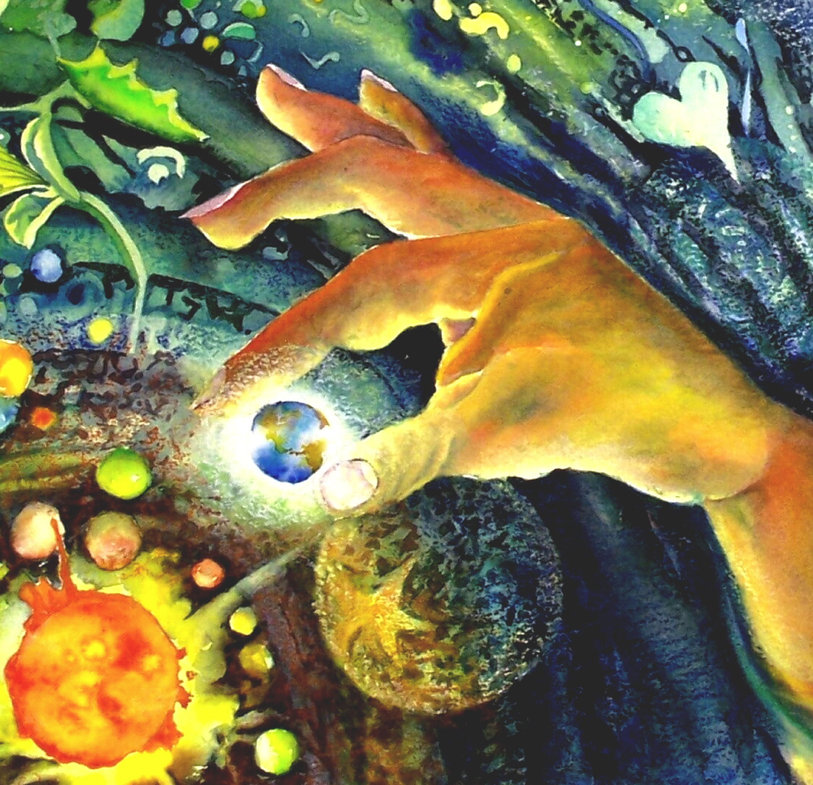

How was the universe created?
I believe that the universe was created by a God. I believe that a God Himself created
the universe within a matter of 6 to 7 days. He created everything in perfection creating
the Heavens and the Earth on the first day, the water and the skies on the second day, sea
and land on the third day, the sun, moon and stars on the fourth day, birds and fish on the
fifth day, and animals and humans on the sixth. God created all of this and was pleased
afterwards. On the seventh day, He rested.

What does it mean to be a human being?
To be a human, is to take care of God's creation and to love on others just as God
loved us. I also believe that being humble is what we are supposed to be; humble not just
to men, but animals and nature.
What happens when you die?
When we all reach that time where we die, those who believed in Christ during
their lifetime will go to Heaven; however, those who did not, will unfortunately
go to Hell and be judged for turning their backs against God.